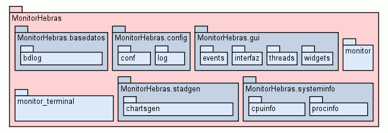

Package MonitorHebras
source code
En esta pagina obtendra toda la informacion acerca del codigo de la
aplicacion Monitor de Hebras.
Package Organization
El paquete MonitorHebras contine los siguientes subpaquetes y
modulos:
|

|
|
Package Tree for MonitorHebras
|
The user interfaces are provided by the `gui` and `cli` modules. The
`apidoc` module defines the basic data types used to record information
about Python objects. The programmatic interface to epydoc is provided
by `docbuilder`. Docstring markup parsing is handled by the `markup`
package, and output generation is handled by the `docwriter` package.
See the submodule list for more information about the submodules and
subpackages.
Author:
`Manuel Soler Moreno <manusoler@gmail.com>`__
Requires:
Python 2.6
Version:
1.0.0
- See Also:
-
`The epydoc webpage <http://epydoc.sourceforge.net>`__,
`The epytext markup language manual
<http://epydoc.sourceforge.net/epytext.html>`__
To Do:
-
Create a better default top_page than trees.html.
-
Fix trees.html to work when documenting non-top-level modules/packages
-
Implement @include
-
Optimize epytext
-
More doctests
-
When introspecting, limit how much introspection you do (eg, don't
construct docs for imported modules' vars if it's not necessary)
Bug:
UserDict.* is interpreted as imported .. why??
License:
GPL
Copyright:
(c) 2009 Manuel Soler Moreno
Contributors (Alphabetical Order):
-
`Glyph Lefkowitz <mailto:glyph@twistedmatrix.com>`__
-
`Edward Loper <mailto:edloper@gradient.cis.upenn.edu>`__
-
`Bruce Mitchener <mailto:bruce@cubik.org>`__
-
`Jeff O'Halloran <mailto:jeff@ohalloran.ca>`__
-
`Simon Pamies <mailto:spamies@bipbap.de>`__
-
`Christian Reis <mailto:kiko@async.com.br>`__
-
`Daniele Varrazzo <mailto:daniele.varrazzo@gmail.com>`__
-
`Jonathan Guyer <mailto:guyer@nist.gov>`__